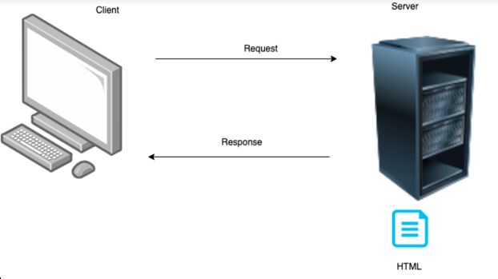

Client/Server
You often talk about clients and servers when talking about the internet. You can see client/server as a structure over information.
Clients are all our devices with access to the internet as phones, computers, tables and watches and such.
They want information, maybe to be able to see web pages in a client program like a browser.
They therefore send requests to a server computer that holds that information in a service app.
The server finds the information, which might be in the form of a html file, and sends that as a response to the client.
